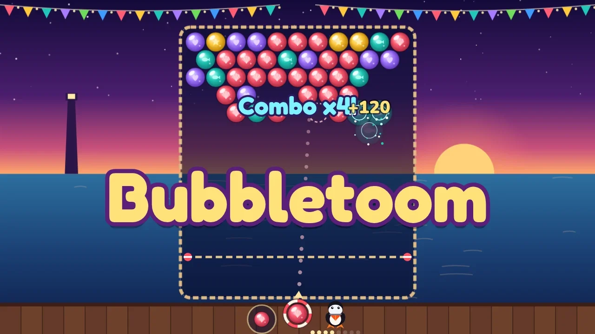

Hexan.js — FPS No downloads or plugins. Direct browser execution.Bubbletoom
Aim, bank off the pier posts and pop festival bubbles over Gullhaven Pier. Drop whole clusters, fill the fever meter and unleash a Storm Clear.
Bubbletoom is a seaside festival puzzle about one good shot. It is dusk on Gullhaven Pier, the lanterns are up, and a sky full of festival bubbles hangs over the tide pool. Drag to aim the lifebuoy launcher, let go to fire, and watch the dotted guide show exactly where the bubble will bank off the pier posts and where it will stick. Land it next to two or more of its own colour and they pop. Anything left hanging with nothing holding it up splashes into the sea, and those drops are worth far more than pops, so the real game is spotting the one bubble that brings a whole cluster down.
Every few shots the tide pushes a new row in from the top, and if the bubbles reach the rope you are out, so plan your banks before the board creeps down. Big pops and drops fill the Fever meter. When it is full your next shot is a rainbow Storm bubble that clears everything around where it lands. Chain scoring shots for a combo multiplier up to five times, and swap the spare bubble whenever the current colour does not fit.
Each of the 30 designed levels has three stars to earn: clear the board, land one big aimed mid-run shot that pops or drops a set number of bubbles (a Storm or the finishing shot does not count), and finish without wasting more than a few shots. The goal card tells you the targets before you play, the HUD tracks them live, and the results screen shows what you earned and what you missed. Levels unlock as you clear them and never start on their own.
The Daily Regatta is one seeded board that is the same for every player that day, with a streak for every day you come back. After each run you see where your score stands, and you can share a picture of your result with a challenge link that opens the very same board with your score as the target to beat.
Every bubble carries its own symbol (shell, star, fish, heart, leaf or drop) so colour is never the only clue. Bubbletoom plays one-handed on a phone in portrait or landscape, with a mouse, or entirely from the keyboard, and your best scores, stars, unlocks and streak are saved on this device.